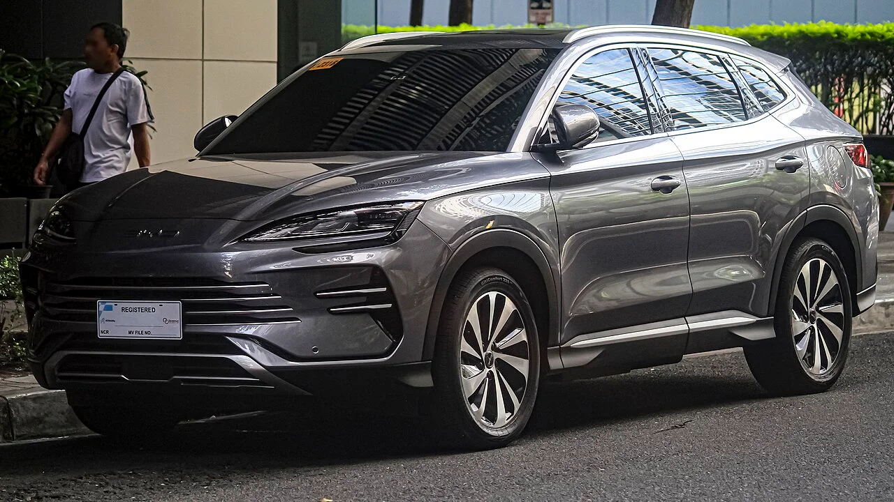
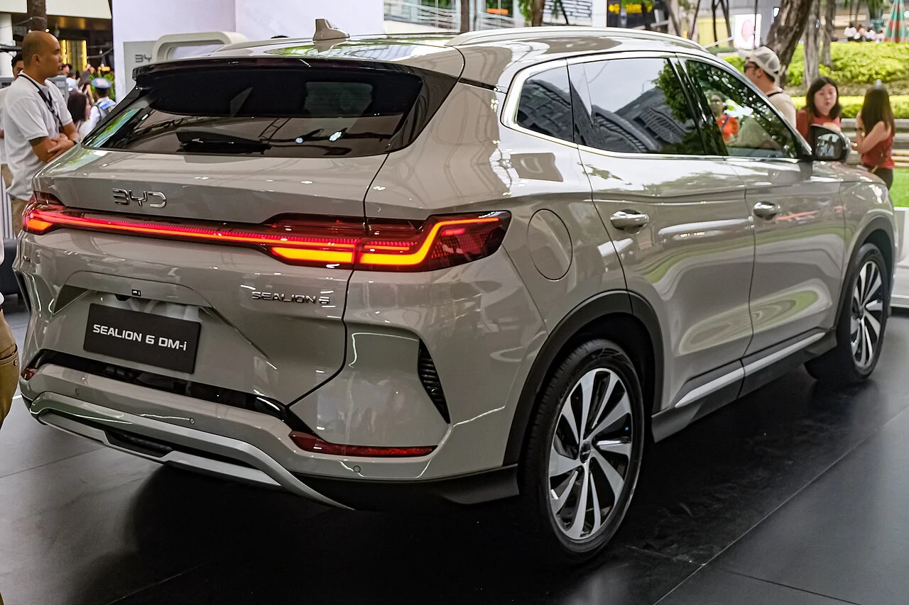
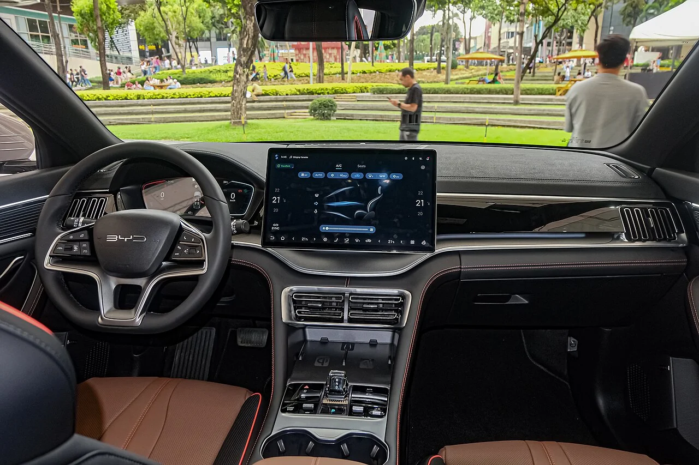

▲ BYD코리아가 처음 선보인 플러그인 하이브리드 SUV, 씨라이언6 DM-i ⓒ Ethan Llamas, Wikimedia Commons (CC BY-SA 4.0)
BYD코리아가 지난 6월 26일 부산모빌리티쇼에서 브랜드 최초의 플러그인 하이브리드(PHEV) 모델 '씨라이언6 DM-i'를 공개하고 사전계약에 들어갔습니다. 국내에 순수 국산 PHEV 라인업이 사실상 전무하고, 수입 PHEV를 사려면 최소 6,000만 원 이상을 지불해야 하는 시장 상황에서 3,750만 원이라는 파격적인 가격표를 내걸어 출시 직후부터 화제를 모았습니다. 실제 시승기와 제원을 취합해 정리했습니다.
1. 국내 출시 & 가격 — "쏘렌토 대신 사는 PHEV"

▲ 씨라이언6 DM-i 후면부. BYD코리아 최초의 플러그인 하이브리드 모델이다 ⓒ Ethan Llamas, Wikimedia Commons (CC BY-SA 4.0)
씨라이언6 DM-i는 3,750만 원이라는 시작 가격으로 국내 중형 SUV 시장, 특히 기아 쏘렌토와 직접 비교선상에 오르고 있습니다. BYD는 가격 경쟁력뿐 아니라 국내 인프라 확충에도 공을 들이고 있는데, 이미 국내 도로를 달리는 BYD 상용차만 1만 5,000대가 넘고 전국 34개 전시장과 20개 서비스센터를 갖췄다는 점을 앞세워 중국 브랜드에 대한 애프터서비스 우려를 정면 돌파하겠다는 전략입니다. DM-i 플러그인 하이브리드 기술 자체도 2008년 이후 누적 8억 대 이상 판매된 BYD의 핵심 기술이라는 점을 강조하고 있습니다.
2. 파워트레인 & 주행 인상 — "가속페달을 깊게 밟아도 엔진이 안 깨어난다"

▲ 1.5L 엔진과 모터를 결합한 DM-i 시스템을 탑재한 씨라이언6 DM-i ⓒ Ethan Llamas, Wikimedia Commons (CC BY-SA 4.0)
씨라이언6 DM-i는 1.5리터 엔진에 전기모터를 결합한 DM-i 시스템으로 시스템 총출력 96kW(130PS), 최대토크 220Nm을 냅니다. 18.3kWh 용량의 LFP 블레이드 배터리를 탑재해 순수 전기 주행거리 70km, 복합연비 15.2km/L를 확보했습니다. 다나와 자동차의 실제 시승 결과, 스포츠 모드 기준 제로백은 9.6초로 공식 제원(8.3초)보다는 다소 느렸지만, "순수 EV 모드에서는 가속페달을 웬만큼 깊게 밟아도 엔진이 쉽게 깨어나지 않을 정도로 전기차 본연의 성격에 충실하다"는 평가를 받았습니다.
배터리 잔량을 25~70% 사이에서 자유롭게 설정할 수 있는 '세이브 모드'가 특히 눈에 띄는 기능으로 꼽혔습니다. 평소에는 전기 모드로만 주행하다가 장거리 구간에서는 미리 배터리를 아껴두는 식으로, 운전자가 EV와 엔진 주행 비중을 세밀하게 조절할 수 있습니다. 정숙성 면에서도 시속 110km 이하에서는 노면·풍절음이 거의 느껴지지 않을 정도로, 일부 일본 브랜드의 PHEV보다도 낫다는 평가가 나왔습니다. 다만 스티어링에는 약간의 유격과 응답 지연이 있고 코너링 시 롤이 발생해, 스포티한 주행감보다는 가족용 승차감에 무게를 둔 세팅이라는 지적도 함께 있었습니다.
3. 실내 & 총평 — 넉넉한 편의 사양, 가격 대비 상품성은 합격점

▲ 12.3인치 디지털 계기판과 15.6인치 회전형 인포테인먼트를 갖춘 씨라이언6 DM-i 실내 ⓒ Ethan Llamas, Wikimedia Commons (CC BY-SA 4.0)
실내는 12.3인치 디지털 계기판과 15.6인치 회전형 인포테인먼트 화면을 중심으로, 360도 서라운드 카메라와 7에어백까지 기본 탑재됐습니다. 앞좌석 통풍·열선 시트, 뒷좌석 열선 시트, 1.085㎡ 크기의 파노라믹 선루프(전동 커튼 포함)도 갖춰 이 가격대에서는 이례적으로 풍부한 편의 사양을 자랑합니다. 2열을 접으면 최대 1,440리터의 적재공간도 확보됩니다. 다만 트렁크 커버 등 일부 플라스틱 마감재에서 "다소 가볍고 헐거운 금속성 소음"이 난다는 지적은 이 가격대에서 감안해야 할 부분으로 꼽혔습니다.
종합하면 씨라이언6 DM-i는 하루 50km 안팎을 통근하는 운전자라면 평일 내내 전기차처럼 타다가, 장거리에서는 하이브리드로 충전 걱정 없이 달릴 수 있는 실용적인 선택지입니다. 3,750만 원이라는 가격에 이 정도의 EV 주행거리와 편의 사양을 담은 국산·수입 경쟁 모델이 마땅치 않다는 점에서, 가성비와 실용성을 중시하는 가족 단위 구매자에게는 매력적인 대안이라는 평가입니다. 다만 중국 브랜드에 대한 소비자 심리적 거부감은 여전히 넘어야 할 산으로 남아 있습니다.